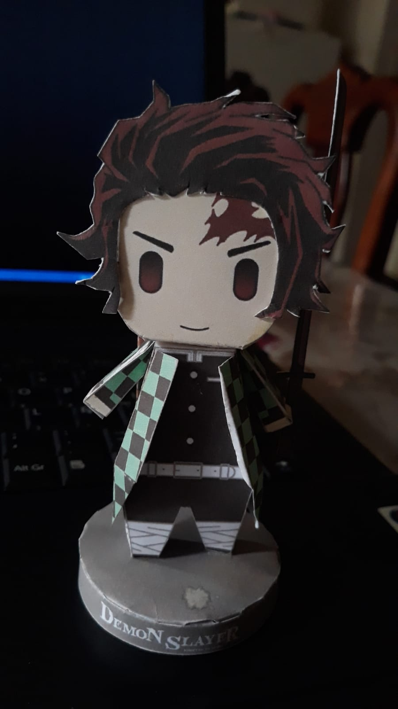
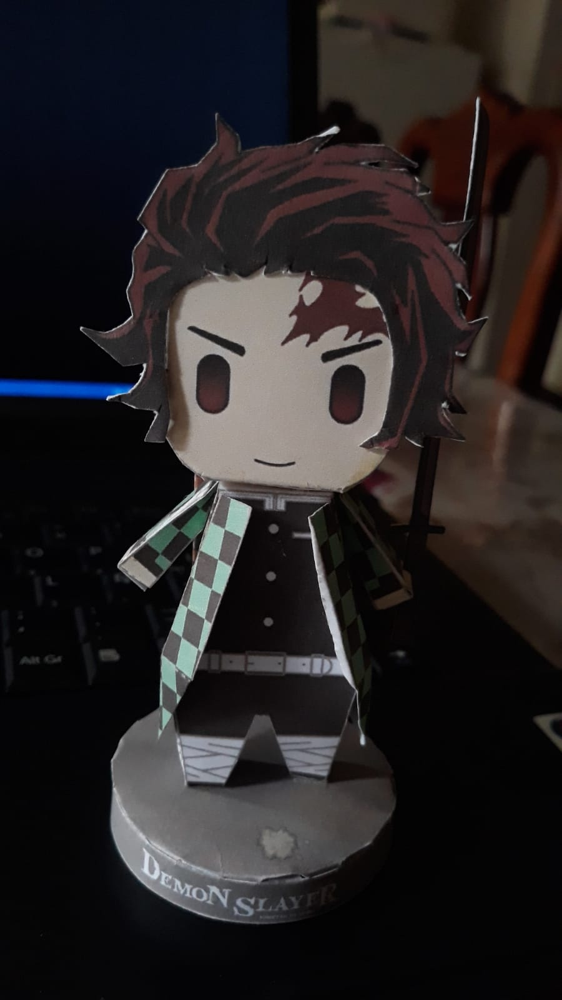

Mis Hobbies
- Armar PaperCrafts
En mis tiempos libres, en especial cuando no hay razones de salir de casa me dedico a buscar plantillas en
internet de cualquier personaje
PaperCrafts, ya sea de alguna serie, película, comic etc. Es un hobby que es muy dinámico y en el que hay que tener una gran paciencia sobre todo
 

- Hacer ciclismo
Suelo hacer ciclismo cada vez que tengo la oportunidad, el ciclismo es una muy buena forma de distraerse mas
aun si vas
acompañado con alguien, de esa forma se olvida de lo cansado que suele ser, los paisajes cuando se va poniendo
el sol lo compensa todo
- Hacer dibujos
Hago dibujos desde que soy muy pequeño, me gusta ver dibujos de otras personas, ya sea aprender su
técnica de dibujo, replicarlo o mejorarlo a mi punto de vista